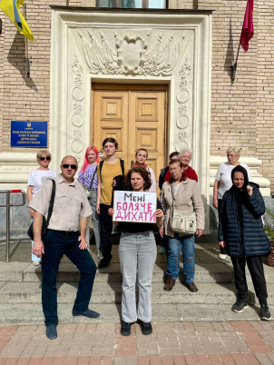

Посеред нашої столиці, за адресою вул. Сирецька, 33 працює
завод ТОВ “АДМ” та здійснює шкідливі викиди у повітря. Це
їдкий сморід , схожий на запах горілого
псластику/проводки/резини. Це задушливий сморід, постраждалі
відмічають погіршення самопочуття: кашель, першіння в горлі,
печіння в носі та горлі, головний біль, підняття тиску.
Для того щоб зрозуміти звідки цей сморід ще з 2022 року наш
активіст Ярослав Залевський об’їзджав навколишній район
свого будинку, раз за разом , коли відчував цей задушливий
сморід. Так само вчинив Гліб Рижов. Об’їзд сусідніх вулиць і
мікрорайонів привів до металоправного заводу “АДМ”.
Та ми не перші в протидії. В 2019 р мешканці вул. Сирецька в
кількості 40 чол, які вже на той час знали звідки димить,
написали колективне звернення, які відправили до Офісу
президента, мера Кличка, Міндовкілля, ДЕІ столичного округу,
Держпродспоживслужби, поліції. Так як у них цим займався
юрист, якому треба було платити, а справи такі швидко не
вирішуються, то через певний час все заглохло. Проте, вони
добилися від ДЕІ позачергової перевірки заводу, яка виявила,
що його дозвіл не актуальний, бо електро печі були замінені
на газові.
Колективна скарга меру Києва в 2019 році була переадресована
на Подільську РДА, яка таким чином була поінформована про
проблему.
Колективна скарга меру Києва в 2019 році була переадресована
на Подільську РДА, яка таким чином була поінформована про
проблему. Але не дивлячись на це, в січні 2021р, коли
директор заводу подав документи на новий дозвіл і, розмістив
при цьому оголошення в газеті Хрещатик, Подільське РДА видає
йому довідку, що в 30 денний термін, з моменту розміщення
оголошення про намір отримати дозвіл, жодних скарг не
надходило. А значить, що проводити громадські слухання щодо
видачі дозволу заводу необхідності немає. Так, завдяки
халатності чи у змові з посадовцями РДА документи на
отримання дозволу потрапляють в Департамент захисту довкілля
КМДА. Саме в цей час щойно призначили на випробувальний
термін Возного, і новопризначений директор їх підписує.
З чого почалось об’єднання у вайбері
Ярослав Залевський, активіст
З 2022 року почалися комендантські години по декілька
діб, і я почав шукати джерело викидів, бо до цього
думав, що це торфяники чи бомжі, чи гаражі. В момент
смороду бачив з вікна одну й ту саму трубу, що потроху
димить. І взимку, і особливо влітку - це єдина труба,
яка димить. Коли я потрапив на завод, не повірив своїм
очам: посеред столиці сміттєспалювальний завод з тоннами
брухту, а директор розказує казки, як його супер печі
«бороздять простори всесвіту».
Починаю шукати інформацію, як таке можливо і, в першу
чергу, чи дійсно завод є джерелом наших бід. І з кожним
днем переконуюсь, що це 100% він: покази працівників
сусідніх організацій, мешканці вул. Сирецька, особисті
огляди всіх територій навколо. Але один у полі не воїн,
тому організовуємось з сусідами, закликаю приєднуватись
мешканців інших районів. Бо більшість людей (від
Виноградаря до Лукʼянівки) просто не розуміють, що за
сморід горілої проводки інколи у повітрі і пропускають
це повз себе.
У заводу відсутній висновок з оцінки впливу на довкілля.
Органи влади кажуть, що заводу він не потрібен. Юристи нам
підказують, що має бути.
З 2023 року ми: написали кол звернення до Міндовкілля, ДЕІ,
ДЗД, поліція, Генеральна прокуратура, двом депутатам.
Спочатку були суто відписки, що перевірки заводу порушень не
виявляють і всі дозволи в наявності. Коли скарг стало
критично багато - нас почали чути, запрошувати на зустрічі з
директором, обіцяти вирішити проблему і тд. Зараз також
відомо, що у заводу відсутній висновок з оцінки впливу на
довкілля. Органи влади кажуть, що заводу він не потрібен.
Юристи нам підказують, що має бути. Для його отримання
завод знову звертатиметься до КМДА та подільської РДА за
довідкою «про відсутність скарг громадськості».
Враховуючи інформацію, яку нам надали в офіційних відповідях
вищевказані державні органи, ми переконані, що безстроковий
дозвіл на викиди забруднюючих речовин в атмосферне повітря
стаціонарними джерелами від 05.03.2021 Nº 8038500000-10271
строком дії дозволу з 05.03.2021 - необмежений, був наданий
безпідставно, необгрунтовано, з грубим порушенням чинного
законодавства та порушенням порядку, яким регламентується
видача дозволів, а також з використанням фіктивних
документів з неправдивою чи недостовірною інформацією, які
надав директор ТОВ “АДМ” через Центр надання
адміністративних послуг.
Управління екології та природних ресурсів виконавчого органу
КМР/КМДА (Департамент захисту довкілля та адаптації до зміни
клімату КМР/КМДА), під час прийняття рішення про надання ТОВ
«АДМ» безстрокового дозволу на викиди, не дотрималось норм
чинного законодавства (в т.ч. ЗУ “Про оцінку впливу на
довкілля”) і грубо порушили порядок надання дозволу, не
здійснило перевірку чи обстеження підприємства і видало
дозвіл суто на підставі документів, які надав директор
заводу, а саме:
Згідно Акту перевірки заводу ДЕІ в 2020 році, завод
відносився до 2-ї групи, хоча такі технологічні небезпечні
підприємства мають відноситись взагалі до 1-ї групи.
Рішення про віднесення заводу ТОВ «АДМ» до 3-ї групи
шкідливості було прийнято без жодної аргументації чи
перевірки, лише на підставі поданої директором заяви, де
він вказав, що відноситься до 3-ї групи. Згідно Акту
перевірки заводу Держекоінспекцією в 2020 році, завод
відносився до 2-ї групи, хоча такі технологічні
небезпечні підприємства мають відноситись взагалі до 1-ї
групи (об'єкти, які взяті на державний облік і мають
виробництва або технологічне устаткування, на яких
повинні впроваджуватися найкращі доступні технології та
методи керування).
Виїзд фахівця на об'єкт та обстеження території
підприємства – не здійснювався.
Проведення лабораторних досліджень – не проводилось.
Складання паспортів установок очистки газу (ПГОУ) – не
перевірялись.
Складання звіту по інвентаризації джерел викидів
забруднюючих речовин – не складались.
Отримання інформації про фонові концентрації
забруднюючих речовин, кліматичні умови району розміщення
підприємства, технічний звіт з визначення географічних
координат – не отримувались.
Громадські обговорення Оцінки впливу на довкілля – не
проводились! Управління екології само не забезпечило
громадське обговорення (як того вимагає ЗУ
«Про оцінку впливу на довкілля») та грубо проігнорувало факт відсутності громадських
обговорень під час видачі дозволу; проігнорувало
порушення з боку заводу щодо інформування громадськості
про намір отримати дозвіл, завод не здійснив необхідного
розміщення інформації у трьох ЗМІ (було розміщено тільки
в одному друкованому виданні) щодо намірів підприємства
отримати дозвіл на викиди, в місцях загального
користування оголошення не розвішувались, громадськість
належним чином повідомлена не була, що є грубим
порушенням вимог ЗУ «Про оцінку впливу довкілля».
Подання в державну адміністрацію запиту про наявність
звернень громадян щодо отримання підприємством Дозволу –
у порушення вимог ЗУ «Про оцінку впливу на довкілля»
громадські слухання не проводились, думку громадськості
враховано не було, і в даний час масові скарги
громадськості та звернення цинічно ігноруються.
Реєстрація Звіту про інвентаризацію джерел викидів
департаментом екології місцевої держадміністрації – не
робився і не реєструвався.
Земельна ділянка, на якій розташовано завод – під завод
не відведена і заводу не належить (це було вказано в
Акті перевірки Держекоінспекцією у 2020 році та
порушення не усунене по даний час).
Наші численні заяви в Екозагрозу вже дали певний результат.
15 серпня ДЕІ провела раптову позачергову перевірку заводу.
Повертаючись до поданих звернень: наші численні заяви в
Екозагрозу вже дали певний результат. 15 серпня ДЕІ провела
раптову позачергову перевірку заводу. Який отримаєм
результат перевірки - побачимо. Якщо ці всі наші зусилля
не дадуть суттєвого результату, нам доведеться проводити
громадські слухання щодо діяльності заводу самостійно під
стінами ДЗД та КМДА, а далі, як останній крок,(коли в нас
буде достатньо доказів та документів) - звертатись до суду.
30.09.2024 публікація петиції на сайті електронних
петицій КМДА.
03.10.24 Зібрані потрібні 6000 голосів.
11.10.24 Постійна комісія Київської міської ради з
питань підприємництва, промисловості та міського
благоустрою розглянула петицію №13224. За результатом
голосування петицію підтримано.
29.10.2024 На засіданні постійної комісії Київської
міської ради з питань екологічної політики було
розглянуто петицію №13224. Підтримано одноголосно.
Також 29 жовтня надійшла відповідь, що місто підтримало
петицію. Далі реалізація. Будемо спостерігати як саме це
буде.
Також 04.10.24 Департамент захисту довкілля та адаптації до
зміни клімату КМДА забезпечив підготовку та прийняття
розпорядження про зупинення дії дозволу на викиди
забруднюючих речовин, виданого ТОВ «АДМ», про це повідомив
директор Департаменту Олександр Возний. Підприємство мало 10
робочих днів для припинення діяльності, тобто мало остаточно
припинити роботу 18 жовтня, що і відбулося.
Та завод позивається до суду для скасування рішення
відкликати дозвіл на викиди. Як і на призупинення дії цього
рішення на час судового процесу.
30.10.2024 Київський окружний адміністративний суд відкрив
провадження за позовом АДМ (справа №: 320/46093/24).
Підприємство бореться за визнання неправомірним відкликання
дозволу на викиди та зупинку дії цього рішення на час
судового процесу.
У чому небезпека?
У чому небезпека?
Image by freepik
Завод «АДМ» здійснює комерційне переплавлення алюмінієвих
відходів: алюмінієвих бляшанок від газованих напоїв, деталей
автомобілів, дротів, сантехніки та іншого металобрухту.
Метал, який «АДМ» закуповує і переплавляє, містить домішки.
Наприклад, алюмінієві бляшанки зсередини вкриті тонким шаром
пластику, який при нагріванні згорає і виділяє канцерогенний
дим. Дроти містять залишки гумового покриття, а металобрухт
може бути вкритий фарбою або містити різноманітні домішки,
що також забруднюють повітря при згорянні[1].
Під час нагрівання алюміній утворює оксид алюмінію, який
випаровується у вигляді диму. Вдихання оксиду алюмінію
викликає сильний кашель і відчуття задухи. Тривалий вплив
оксиду алюмінію на дихальну систему призводить до утворення
легеневого фіброзу (рубцювання легень), астми та дихальної
недостатності[2, 3].
Майже щовечора понад 500 000 жителів прилеглих спальних
районів вдихають «коктейль» з оксиду алюмінію, фторидів,
діоксиду сірки та невідомих побічних речовин переробки
алюмінію. У спеку і вечірню прохолоду, незалежно від сезону
та погоди, мешканці змушені сидіти із зачиненими вікнами.
Які наслідки?
Люди з дихальними захворюваннями й алергіями скаржаться
на погіршення стану та загострення хвороб.
Діти, які навчаються в 9 закладах освіти в радіусі 3
кілометрів від заводу АДМ, у найважливіші роки свого
розвитку вдихають шкідливі речовини.
Пенсіонери та люди з інвалідністю, які мають обмежену
мобільність, не можуть захиститися від небезпечного
диму.
Викиди заводу «АДМ» — це часова бомба, яка за кілька років
призведе до «вибуху» респіраторних хвороб, онкологічних
захворювань, нейрокогнітивних дисфункцій[4] та низки інших
серйозних діагнозів навіть серед здорових людей. Передбачити
масштаб впливу заводу на здоров'я жителів навколишніх
районів неможливо, але вже зараз безвідповідальність
керівництва заводу та його співробітників, а також
байдужість органів влади призводять до суттєвого погіршення
умов життя тисяч людей.
15 серпня 2024 року спеціалістами Державної екологічної
інспекції Столичного округу та Державної екологічної
інспекції Поліського округу в рамках кримінального
провадження (номер в ЄРДР: 42023102070000301) взято участь у
проведенні слідчих (розшукових) дій на ТОВ «АДМ» за адресою:
м. Київ, вул. Сирецька, 33.
15 серпня 2024 року спеціалістами Державної екологічної
інспекції Столичного округу та Державної екологічної
інспекції Поліського округу в рамках кримінального
провадження (номер в ЄРДР: 42023102070000301) взято участь у
проведенні слідчих (розшукових) дій на ТОВ «АДМ» за адресою:
м. Київ, вул. Сирецька, 33.
В ході слідчих дій залученими спеціалістами відділу
інструментально-лабораторного контролю Державної екологічної
інспекції Поліського округу з метою контролю за дотриманням
нормативів ГДВ забруднюючих речовин в атмосферне повітря,
встановлених дозволом № 8038500000-10271 на викиди
забруднюючих речовин в атмосферне повітря стаціонарними
джерелами, виданого Управлінням екології та природних
ресурсів виконавчого органу Київської міської ради (КМДА)
05.03.2021 року, на джерелі викидів № 1 було здійснено
відбір проб в організованих викидах стаціонарних джерел ТОВ
«АДМ».
Акти відбору проб організованих викидів стаціонарних джерел
та зразки забруднюючих речовин були передані слідчому в
кримінальній справі.
Наразі результатів немає у публічному доступі. Але є
коментар Володимира Колодчина, керівника відділу
представництва інтересів у судах та правоохоронних органах
ДЕІ у телесюжеті: зафіксовано перевищення недозволених
речовин у десятки разів. Про перевищення, хід перевірки та
коментарі мешканців району у сюжеті телеканалу Рада:
Протягом понад 5 років повітря Києва забруднюється їдкими
хімічними викидами брухтоспалювального заводу ТОВ «АДМ» (код
ЄДРПОУ 24594429), яке приховане серед складських приміщень
та будівель інших підприємств по вул. Сирецька, 33 (на
прохідній та будівлях заводу відсутні будь-які інформаційні
таблички про підприємство тощо). Від викидів підприємства
страждають мікрорайони: Сирець, Куренівка, Нивки, Замковище,
Почайна, Оболонь, Лук’янівка.
ТОВ «АДМ» отримало від міської влади безстроковий дозвіл
№8038500000-10271 на виплавку продукції з чистого алюмінію,
а натомість скуповує металобрухт з усієї України (пивні
банки з фарбою, державні номери, електродроти в ізоляції,
металопластикові вікна, автомобільні радіатори з мастилом та
тосолом) і транспортує на завод для випалювання в своїх
печах прямо посеред столиці, задля виплавки алюмінієвих
злитків, які вивозяться потім за кордон.
Неодноразово були зафіксовані факти викидів продуктів
згоряння повз трубу заводу. Викиди здійснювались у великих
масштабах через дах та інші отвори цеху, про що свідчать
відеоматеріали, які мають мешканці. Продукти горіння не
відфільтровуються належним чином, а тому все викидається в
повітря. Коли це відбувається, мешканці відчувають
задушливий сморід горілої фарби, гуми, пластику.
Хто ми?
Хто ми?
Ми мешканці Подільського та Шевченківського районів. Нас
об’єднала спільна біда: нестерпний їдкий сморід, через який
живеш із закупореними вікнами з року в рік. І це не просто
неприємна вонь: сморід впливає на здоров’я — викликає
подразнення слизових, кашель, головний біль тощо. Як
виявилося, нас отруює ТОВ «АДМ», який знаходиться за адресою
вул. Сирецька, 33.
З чого почалось об’єднання у вайбері
Ярослав Залевський, активіст
З 2022 року почалися комендантські години по декілька
діб, і я почав шукати джерело викидів, бо до цього
думав, що це торфяники чи бомжі, чи гаражі. В момент
смороду бачив з вікна одну й ту саму трубу, що потроху
димить. І взимку, і особливо влітку - це єдина труба,
яка димить. Коли я потрапив на завод, не повірив своїм
очам: посеред столиці сміттєспалювальний завод з тоннами
брухту, а директор розказує казки, як його супер печі
«бороздять простори всесвіту».
Починаю шукати інформацію, як таке можливо і, в першу
чергу, чи дійсно завод є джерелом наших бід. І з кожним
днем переконуюсь, що це 100% він: покази працівників
сусідніх організацій, мешканці вул. Сирецька, особисті
огляди всіх територій навколо. Але один у полі не воїн,
тому організовуємось з сусідами, закликаю приєднуватись
мешканців інших районів. Бо більшість людей (від
Виноградаря до Лукʼянівки) просто не розуміють, що за
сморід горілої проводки інколи у повітрі і пропускають
це повз себе.
Під час зустрічі громади під заводом 29 березня 2024 року
шляхом голосування ми обрали ініціативну групу з трьох осіб
та уповноважили їх представляти інтереси громади на нараді в
Подільській РДА. Ними стали:
Ярослав Залевський, голова ОСББ.
Тетяна Гладкова, голова ЖБК, співзасновник Асоціації ЖБК
та ОСББ Шевченківського району.
Гліб Рижов, голова ГО «Шевченківський рух».
Кожен може доєднатися і зробити свій вклад. Кожне звернення
в органи, кожне повідомлення в медіа чи блогерам важливі.
Важливий кожен присутній на зустрічах з владою. Коли ми
разом, нас неможливо ігнорувати. На кону не абищо, а наше
здоров’я!
Ми захищаємо наші права, гарантовані нам Конституцією
України, а саме: Стаття 16 Конституції України зазначає, що
екологічна безпека — це обов'язок держави. Стаття 50
Конституції України гарантує громадянам право на безпечне
для життя і здоров'я довкілля, а стаття 66 Конституції
України наголошує на обов'язку кожного не заподіювати шкоду
природі та на відшкодування завданих збитків.
Згідно із Законом України «Про охорону навколишнього
природного середовища», Стаття 5, державній охороні і
регулюванню використання на території України підлягають:
навколишнє природне середовище як сукупність природних і
природно-соціальних умов та процесів, природні ресурси, як
залучені в господарський обіг, так і не використовувані в
економіці в даний період (земля, надра, води, атмосферне
повітря, ліс та інша рослинність, тваринний світ), ландшафти
та інші природні комплекси. Державній охороні від
негативного впливу несприятливої екологічної обстановки
підлягають також здоров'я і життя людей.
Що зроблено?
Що зроблено?
Ще у 2019 році мешканці вул. Сирецька в кількості 40
чоловік, які вже на той час знали, звідки димить, написали
десяток колективних звернень, які відправили до Офісу
президента, мера Кличка, Міндовкілля, ДЕІ столичного округу,
Держпродспоживслужби, поліції тощо.
Вже з 2022 року ця проблема об’єднала більш ніж одну
вулицю.. Були подані сотні звернень у «Екозагрозу», на 1551,
1545, у поліцію, до депутатів, журналістів, громадських
організацій.
29 березня 2024 року ми зібралися біля території ТОВ «АДМ».
Обговорили проблему їдкого смороду в повітрі. Провели
громадські слухання щодо негативного впливу викидів заводу
на умови проживання та здоров’я населення, яке проживає в
дотичних до заводу районах. Прийняли рішення вимагати
скасування дозволу на викиди ТОВ «АДМ» у м. Києві, заборони
діяльності небезпечного шкідливого підприємства та винесення
ТОВ «АДМ» за межі столиці. Також обрали ініціативну групу з
трьох осіб та уповноважили їх представляти інтереси громади
на нараді в Подільській РДА. Ними стали: Ярослав Залевський,
Тетяна Гладкова, Гліб Рижов.

Підтримуємо ініціативну групу під стінами Подільської РДА
2 квітня 2024 року в Подільській РДА відбулася нарада
стосовно розгляду колективного звернення мешканців
Подільського та Шевченківського районів міста Києва (понад
5000 осіб) щодо забруднення атмосферного повітря викидами
шкідливих речовин ТОВ «АДМ» (код ЄДРПОУ 24594429),
розташованого по вул. Сирецькій, 33. Запрошеними були:
Державна екологічна інспекція Столичного округу, Головне
управління Держпродспоживслужби в м. Києві, ДУ «Київський
міський ЦКПХ МОЗ», Департамент захисту довкілля та адаптації
до зміни клімату, Подільська районна в місті Києві державна
адміністрація, Подільське управління поліції ГУНП у м.
Києві, ініціативна група мешканців Подільського та
Шевченківського районів, директор ТОВ «АДМ».
В кінці травня – на початку червня ми зібрали підписи під
зверненням до народної депутатки Ганни Бондар з метою
подальшого направлення у відповідні інстанції звернень щодо
забруднення повітря в мікрорайоні.
17 червня 2024 року в КМДА відбулася друга зустріч з
Департаментом захисту довкілля та адаптації до зміни клімату
виконавчого органу Київської міської ради, Державною
екологічною інспекцією, представниками громади у кількості
шести осіб та представником ТОВ «АДМ».
9 липня 2024 року відбулася ініційована депутаткою Ганною
Бондар зустріч громадськості з чиновниками Подільської РДА.
Заслухали заступника голови Подільської РДА та інспектора
екологічного відділу райадміністрації, які заявили, що завод
АДМ є одним з найбільших платників податків у районі, а
директор заводу — дуже порядна шанована людина в очах
адміністрації.
Після цього Ганна Бондар ініціювала зустріч представників
громади з керівництвом Державної екологічної інспекції, які
доповіли, що останнім часом отримали безліч скарг киян на
діяльність заводу. Було заявлено, що якщо скарги
продовжаться, ДЕІ проведе позачергову перевірку діяльності
заводу.
15 серпня 2024 року відбулася раптова позапланова перевірка
ТОВ «АДМ» Державною екологічною інспекцією в рамках
відкритого кримінального провадження. Триває слідство. У
«Єдиних новинах» на телеканалі Рада вийшов сюжет з цього
приводу, і слова керівника відділу представництва інтересів
у судах та правоохоронних органах ДЕІ про первинні
результати перевірки вселяють надію, що проблема буде
вирішена:
6 вересня нашу групу поширили і висвітлили нашу боротьбу
у телеграм каналі
Андріюк Онлайн.
7 вересня 2024 року з ініціативи Департаменту захисту
довкілля КМДА відбулася зустріч громадськості з
Олександром Возним для подальшої координації дій у
вирішенні проблеми.
11.10.24 Постійна комісія Київської міської ради з
питань підприємництва, промисловості та міського
благоустрою розглянула петицію №13224. За результатом
голосування петицію підтримано.
Також 29 жовтня надійшла відповідь, що місто підтримало
петицію.
Що я можу зробити?
Що я можу зробити?
Зараз видихаємо.
Станом на 01.11.2024 (змінити) після відкликання дозволу
завод перестав працювати. Та завод позивається до суду
для скасування рішення відкликати дозвіл на викиди. Як і
на призупинення дії цього рішення на час судового
процесу.
Наша задача слідкувати за судовим процесом та
відвідувати суди.
А інформація нижче може знадобитися громадам, які
опинилися у схожій ситуації з недобросовісним
виробництвом.
1. Подання заявок і звернень
Знову відчуваєте сморід? Подайте заявку в «Екозагрозу»
через браузер або через додаток. Заявки в «Екозагрозу» —
найкращий варіант, їх обробляє Державна екологічна
інспекція. У заявці обов’язково вкажіть точку на мапі
(або введіть адресу), опишіть причину звернення,
вкажіть, що є причиною смороду та який це вплив має на
вас.
Також можна подавати скарги на 1551 та 1545.
2. Фіксація правопорушення через поліцію
Відчуваєте сморід? Викличте поліцію. Навіть якщо до вас
довго їхали, а сморід встиг розвіятися, ви так само
маєте змогу написати заяву і віддати патрулю. Запитайте
у поліцейських номер вашого звернення і збережіть його.
3. Якщо маєте зміни у здоров’ї
Якщо сморід викликає погіршення самопочуття — викликайте
швидку і так само фіксуйте це.
Також зафіксуйте зміни у здоров’ї у сімейного лікаря,
попросіть роздрукувати вам запис прийому. За потреби
візьміть направлення до вузьких спеціалістів, так само
просіть роздруковувати прийом.
Кожен з вищеописаних варіантів документування порушення
є дуже важливим.
4. Інформування медіа
Проявіть ініціативу. Напишіть журналістам, телеканалам,
блогерам, організаціям, в тому числі міжнародним, про
проблему. Продовжуйте надавати інформацію, коли
відбувається щось нове. Це те, що під силу кожному, і
коли ми це робимо масово і з певною регулярністю, це
дасть результат.
5. Будьте присутні на зустрічах
Слідкуйте за анонсами зустрічей у вайбер-групі. Ми вже
збирались біля заводу, під Подільською РДА, КМДА —
подібні зустрічі будуть ще. Ми закликаємо вас приходити,
по можливості відпрошуватися з роботи. Наприклад, на
зустрічі під стінами КМДА було приблизно 12 чоловік,
крім представників громади, які були на самій зустрічі з
посадовцями. Треба значно більше, ніж 12, щоб нас було
неможливо ігнорувати, щоб ми були помітні кожному
пішоходу, щоб телеканали приїжджали висвітлювати наші
зібрання.
6. Говоріть з людьми
Це підводить до ще одного пункту: буде чудово, якщо ви
будете активно поширювати інформацію у чатах своїх
будинках про сморід, тримати в курсі новин, поширювати
інформацію про збори. Також поширювати інформацію з вуст
в уста можна будь-де: підняти тему, поки їдете у таксі,
приглядаєте за дитиною на майданчику, очікуєте в черзі
тощо. Багато людей відчувають сморід, але так і не
розуміють, звідки він береться.
7. Інформування через оголошення
Ще один спосіб поширення інформації: роздрукувати і
розклеїти оголошення або зробити флаєри і роздавати їх.
Документи
Висвітлення у медіа
Вимоги
Ми захищаємо наше життя і здоров'я.
Вимагаємо винесення заводу за межі міста!
Зв'язатися
Зв’язатися з нами ви можете у чаті вайберу, або написати в особисті
адміністраторам групи.